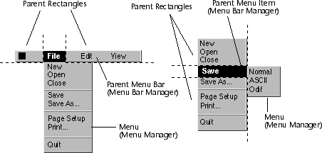
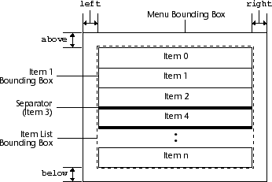
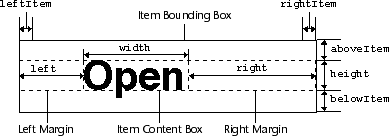
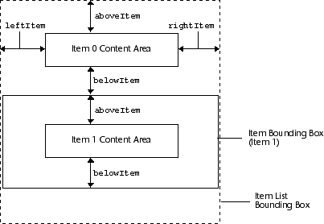

Menu
The Menu class allows you to create and manipulate menus, ordered collections of commands and settings. Menus are the principal method for manipulating application documents and issuing application commands. Each menu contains an array of menu items that represents individual commands. Figure 54 illustrates a sample menu and typical menu items.
Figure 54. Sample menu and menu items

A menu is a window subclass. The Menu class adds methods to the window class to manage menu elements contained by a menu.
This chapter also discusses attribute bindings, context dictionaries, and the use of commands instead of notification functions. Refer to the Command chapter for information about using context dictionaries and commands, and to the Class Manager chapter for information about attribute bindings.
A pinnable menu is a menu that can be removed from a dialog and placed in its own window. A dashed line or "push-pin" (depending on the look-and-feel) at the top of a menu denotes a pinnable menu.
Menus can also be associated with a dialog item. The dialog item's menu is activated by either clicking on the dialog item (such as a button), or by pressing on the pointer's menu activation button (usually the right mouse button).
A menu can be attached to another menu item, in which case the menu is referred to as a sub-menu. See Figure 55 for a sample of different menus available through the Menu class.
Figure 55. Different menus
Each menu has a class that determines its overall appearance and behavior. Each menu, as well, has a parent object, which is the object through which the application user opens the menu.
The parent object has two associated parent drag-off rectangles that define the areas of the screen where mouse dragging unselects the menu.
The Menu class draws the items of a standard menu within a rectangular window called the menu bounding box. Figure 56 illustrates the menu bounding box.
Figure 56. Menu structure

A sub-menu item references another menu. The sub-menu item contains a small triangle or arrow to indicate that a sub-menu will pop up when highlighted.
A toggle menu item allows the end-user to turn a menu item on or off. The application detects the state of the menu item, and takes the appropriate action. In addition to the title, mnemonic, and accelerator key, a toggle item contains a field indicating the current On or Off state.
A separator menu item can define groups of menu items by drawing a bar across the menu. Separator items can also be used to create exclusive groups of toggle items (groups of menu items that can only have one item selected at a time). See Figure 57 for an illustration of different menu items.
Figure 57. Menu items
Each menu item contains a content box, a right margin, and a left margin to display menu contents. Figure 58 illustrates a menu item's metrics.
Figure 58. Menu item metrics

Menu items are drawn from the top of the menu bounding box down. Each item has a content area that contains the visible contents of the item. The content areas are vertically spaced using explicit distances. However, their widths are dynamically justified when you draw the menu so as to visually align the information in different items. The width is set to the length of the longest menu item, while the left spacing is aligned with the text in other menu items (such as a toggle item). The metrics used to compute this information are stored in the menu item list. The calculation references the item's position in the menu item list, as well as the widths of the other menu items.
Figure 59. Menu list structure

Note that a future release of Galaxy may allow a menu to inherit from its parent object (for instance, the menu bar or option menu) instead of its leader window. Refer to the Window chapter for more information about window inheritance.
Menu item element classes are derived from the default attributed object class. This means that menu items elements are part of the user interface inheritance hierarchy. Inherited menu item element attributes (for example, foreground color, and font) are first determined from the menu item's element's object attributes, if any, followed by the menu item's element's class attributes. The menu item element also inherits from its containing menu according to the algorithm described in the previous paragraph (using window leaders and applications). Inheritance can be diagrammed as follows, from highest precedence to lowest precedence. Italics indicate that zero or more objects can be present at that level. Note that if multiple leaders are present, then lookup passes from leader1 to class1 to leader2 to class2, not from leader1 to leader2 to class1 to class2.
A menu usually appears with a graphical component, often a menu bar. Remember that a menu bar only provides a stylistic representation of the menu, and does not contain the menus themselves. To manipulate and modify a menu, you need to get it from the parent object (in this case, a menu bar). Example 101 demonstrates the association between a menu bar and its menus. Pinnable menus (menus that can be placed in a separate window) also can be accessed in a similar manner.
Example 101. Menu bars and menus
Example 102. Dialog items and menus
The most common retrieval method is through using a menu item's tag with FindItem. For example, the following call locates the menu item with the tag (not the title) of "Exit":
Example 103. Locating a menu item by its title
You can, however, assign a notification function to each menu item in order to perform actions suitable to the menu item selected. Example 104 illustrates this for a menu item (in this case "Exit").
Example 104. Notification function for a menu item
Example 105. Adding a menu item to a menu
A menu item can also be inserted into the middle of a menu, but this requires that you reference the menu item list, which you can get by using GetItemList. Insert the menu item with InsertItemListItem. This function requires the item list, the menu item to be inserted, and the index for insertion. Note that the item is inserted immediately after the given index. A more refined version of Example 105 is shown in Example 106, which limits the number of new menu items to five and inserts the filename after the "Exit" menu item.
Example 106. Inserting menu items
Example 107. Changing the state of a menu item
Example 108. Using a toggle item
Example 109. Subclassing the default menu class
It is important to note that a pinned menu and the original menu in a dialog are both still functional. Hence, an end-user can use either menu to cause actions to take place. Note that the pinned menu and original menu do not communicate the state of their items to each other. In other words, if a user were to turn off a toggle menu item in the pinned menu, the toggle menu item in the original menu would not automatically change to an "off" position as well. Hence, if toggle menu items are to be used in a pinnable menu, you must provide appropriate functions to handle the proper toggling of items in both menus.
Menu Types
A menu is a single array (column) of menu items. The Menu class provides several different types of menus. The most basic type of menu is one associated with a menu bar, and located in a dialog. Refer to the Menu Bar chapter for more information on menu bars. Although a menu bar controls the style and location of its menus, it is the Menu Bar class that actually draws the menus, and the that implements notification of user-triggered actions.
Menu Items
The Menu class provides several menu items:
The standard menu item contains the item's title, the mnemonic (if any), and the accelerator key (if any).
NOTE: When the item is drawn, the actual widths of the right and left margins are
calculated so that all items in the item list have the same width. The actual
width of the item list is the largest of the individual item widths.
Menu Item Lists
A menu item list controls the structure and layout of the menu items. The menu item list also highlights menu items when the menu receives user events. Each menu item contains a content box, a right margin, and a left margin to display menu contents. Refer to Figure 59 for an illustration of how menu item metrics are specified. Use a menu item list to control the location (index) of menu items, in addition to programmatically inserting and removing menu items.NOTE: Item List Box, Item Boxes, and Item Content Boxes are typically not drawn.
Menu Inheritance
Since menus are derived from windows they inherit attributes and bindings in the same way that windows do. A menu inherits attributes from its leader window, which in turn inherits attributes from its leader window. Inheritance continues in this manner until a window with no leader is reached (this could also be the original menu itself), at which point the window inherits from its application object. Note that objects inherit from their classes as well as their instances.
Menu Item Class
Menu Class
Menu Leader Class
Application Class
Creating and Using Menus
You create most menus through the use of the Visual Resource Builder, although it is possible to construct menus programmatically with the Menu class. As a result, the Menu class provides creation and copy functions such as Create, Create*Item, and Copy. // ...
vmenubar *mbMain = (vmenubar *)
vdialogFindItem(dialog, vnameInternGlobalLiteral("mbMain"));
vmenu *mFile = vmenubarFindMenu(mbMain,
vnameInternGlobalLiteral("File"));
// ...
Similarly, a generic dialog item can be associated with a menu. Example 102 illustrates the association between a button (a dialog item) and a menu. // ...
vbutton *bToDo = (vbutton *)
vdialogFindItem(dialog, vnameInternGlobalLiteral("bToDo"));
vmenu *ButtonMenu = vbuttonGetMenu(button);
// ...
Locating Menu Items
Once you have a reference to a menu, you can find an associated menu items in several different ways:
Note that menu items are numbered from zero to one less than the number of items in the menu.
To find the menu item that is currently selected.
If you know the location of a menu item.
To locate the default menu item (the item that is selected when a menu pops up).
If you know the tag name assigned to a menu item.
vmenuItem *miExit = vmenuFindItem(menu,
vnameInternGlobalLiteral("Exit"));
Example 103 demonstrate a code sample that locates a menu item by its title.vmenuItem *FindItemByTitle (vmenu *menu, const vchar *title)
{
vmenuItem *miTemp;
int num;
/*
* Find the number of menu items, and loop through looking for an
* item that has the name.
*/
for (num = 0; num < vmenuGetItemCount(menu); num++) {
miTemp = vmenuGetItemAt(menu, num);
if (vcharCompare(vmenuGetItemTitle(miTemp), title) == 0) {
/* Found it! */
return (miTemp);
}
}
/* If we got here, we didn't find it so return NULL */
return NULL;
}
Triggering Actions
For a menu item to trigger an action, you need to do one of the following:
Using predefined commands and assigning command dictionaries allows the application to take advantage of the Command Manager. In complex applications, where several items can trigger an action (such as a button and a menu item), a single command can be assigned to handle both cases. Refer to the Command Manager for more information on commands.{
// ...
/*
* Find the menu item with the Tag of "Exit"
*/
miExit = vmenuFindItem(menu, vnameInternGlobalLiteral("Exit"));
/*
* Assign a notification function to the menu item
*/
vmenuSetItemNotify (miExit, ExitNoteProc);
// ...
}
/*
* This is a menu item notification function that will optionally
* shutdown a program.
*/
void ExitNoteProc (vmenuItem *miExit, vevent *event)
{
/*
* ConfirmExit is a user provided function to confirm exiting
*/
if (ConfirmExit() )
veventStopProcessing();
}
Adding and Removing Menu Items
Menu items can be dynamically added and removed from menus. Even if the menu has been created with the Visual Resource Builder, adding menu items to a menu might be useful (such as when adding previously accessed file names to the "File" menu). Example 105 illustrate a code sample that appends a new menu item onto a menu.void AddToMenu1 (vmenu *menu, const vchar *title)
{
/* Create a new menu item, allocating memory, etc. */
vmenuItem *miNew = vmenuCreateItem();
/* Assign the name to the new menu item */
vmenuSetItemTitle(miNew, title);
/* Add the menu item onto the bottom of the menu */
vmenuAppendItem(menu, miNew);
}
A menu item can be removed from the menu by using DeleteItem./*
* This function expects the last standard menu item to be called
* "Exit." It will place the last five names passed to it onto the
* menu.
*/
void AddToMenu2 (vmenu *menu, const vchar *title)
{
vmenuItem *miNew;
vmenuItem *miExit;
vmenuItemList *itemList;
int num;
miExit = vmenuFindItem(menu, vnameInternGlobalLiteral("Exit"));
/* Find the menu item called "Exit" */
if ( miExit == NULL ) {
/* Problem */
vdebugMWarn(("Could not find Exit in the menu."));
return;
}
/* Find how many filenames are already in the menu */
num = vmenuGetItemCount(menu) -
(vmenuGetItemIndex(menu, miExit) + 1);
/* Check if there are more than five and, if so remove one */
if (num == 5)
/* Delete the last one */
vmenuDeleteItem(menu,
vmenuGetItemAt(menu, vmenuGetItemCount(menu) - 1));
/* Create and assign the title to the new menu item */
miNew = vmenuCreateItem();
vmenuSetItemTitle(miNew, title);
/* Get the menu list item (needed for insert function) */
itemList = vmenuGetItemList(menu);
/* Insert the menu to just after the "Exit" menu item */
vmenuInsertItemListItem(itemList, miNew,
vmenuGetItemIndex(menu, miExit));
}
Pinnable menus
A pinnable menu allows the end-user to place a menu in an individual window. The window is assigned to be follower to the dialog that originally contained the menu. As a result, any menu item selected in the pinnable menu is passed up the window inheritance hierarchy. This results in the original dialog handling the menu item's event as if it was generated in the dialog itself. Refer to the Window chapter for more information on inheritance. Menu Separator Items
Use a menu separator item to visually group menu items together. A separator cannot be selected by the end-user, so most menu item attributes (such as notification and enable or disable state) are not applicable. You can create a menu separator item by using CreateSeparatorItem; place the separator on a menu by using AppendItem or InsertItemListItem, as illustrated in Example 105. Menu and Menu Item States
There are times when it is desirable to prevent the user from selecting a particular menu item, or perhaps an entire menu. Change the enabled state of a menu by using Disable and Enable. Similarly, menu items can be enabled or disabled by using DisableItem and EnableItem.void ToggleSaveOption (vmenubar *menubar)
{
vmenu *mFile = vmenubarFindMenu(menubar,
vnameInternGlobalLiteral("File"));
vmenuItem *miSave = vmenuFindItem(mFile,
vnameInternGlobalLiteral("Save"));
/* If it is enabled, disable it. Otherwise, enable it */
if (vmenuItemIsEnabled(miSave))
vmenuDisableItem(miSave);
else
vmenuEnableItem(miSave);
}
Note that although the Menu class provides this functionality, in complex applications it is often better to use a context dictionary, which controls the attribute state of dialog items and menus. See the Command and Class Manager chapters for more information on changing attributes with a context dictionary. Toggle Menu Items
The Menu class provides a menu item called a toggle item that allows the end-user to turn a menu item On or Off. You can determine whether the menu item is currently in an On or Off state by using ItemIsOn. You can change the On or Off state by using SetOn and passing it TRUE or FALSE. Example 108 illustrates using a toggle item./*
* Note that by the time this notification function is called, the Menu
* class has already set the menu item to be On or Off depending on user
* action and its previous state. This determines what action should now
* be taken according to the current On or Off state.
*/
void ViewGridLines (vmenuItem *miGrid, vevent *event)
{
/* Determine whether they turned the menu item on or off */
if (vmenuItemIsOn) /* Menu item is on! */
/* User defined function */
DrawGridLines();
else /* Menu item is off... */
RemoveGridLines();
}
Exclusive Groups of Toggle Items
The Menu class allows you to group menu items by using a menu item separator. You can create exclusive groups of toggle items, where only one toggle item in the group can be selected at any one time by using SetExclusive. You can determine whether an menu item is assigned to an exclusive group by using ItemIsExclusive. Sub-menus
A sub-menu is a menu that is attached to a menu item. A sub-menu pops up when the end-user highlights a menu item that has an assigned sub-menu. In general, sub-menus function just like other menus. If you ever need to access a sub-menu, use GetItemSubMenu, passing in the menu item to which the sub-menu is attached. Preferences
The only preference that the Menu class defines is menuflashcount, which controls the number of times a Macintosh menu blinks when selected. See the Preference chapter for more information on preferences. Subclassing
The code in Example 109 illustrates how you can subclass the default menu class.static vmenuClass *menuClass;
static void menuEnableFunction(vmenu *menu)
{
vclassSendSuper(menuClass, vmenuENABLE, (menu));
vdebugMInform(("Enable menu...n"));
}
static void menuDisableFunction(vmenu *menu)
{
vclassSendSuper(menuClass, vmenuDISABLE, (menu));
vdebugMInform(("Disable menu...n"));
}
static void menuArrangeFunction(vmenu *menu, const vmenuMetrics *metrics)
{
vclassSendSuper(menuClass, vmenuARRANGE, (menu, metrics));
vdebugMInform(("Arranges dimensions for menu...n"));
}
void ExampleFunction (void)
{
// ...
vmenu *menu;
vmenuMetrics metrics;
menuClass = vclassReproduce(vmenuGetDefaultClass());
vclassSet(menuClass, vmenuENABLE, menuEnableFunction);
vclassSet(menuClass, vmenuDISABLE, menuDisableFunction);
vclassSet(menuClass, vmenuARRANGE, menuArrangeFunction);
menu = vmenuCreateOfClass(menuClass);
vmenuEnable(menu);
/* will call menuEnableFunction(...) */
metrics.flags = 0;
metrics.left = 3;
metrics.right = 3;
metrics.above = 3;
metrics.below = 3;
metrics.leftItem = 2;
metrics.rightItem = 2;
metrics.aboveItem = 2;
metrics.belowItem = 2;
vmenuArrange(menu, &metrics);
/* will notify menuArrangeFunction(...) */
vmenuDisable(menu);
/* will notify menuDisableFunction(...) */
// ...
}
Avoiding Pitfalls
Although it is possible to individually disable and enable menu items, for complex menus and dialog items, it is often easier to use an attribute dictionary. An attribute dictionary controls the state of dialog items, including menus. See the Class Manager chapter for more information on attribute dictionaries.
Table of Contents
Help Map
Need help? Contact Visix.